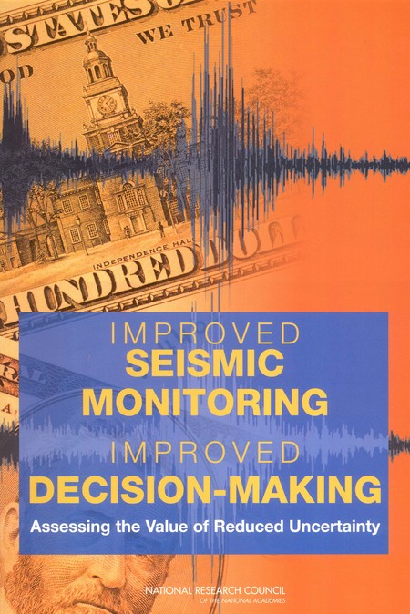
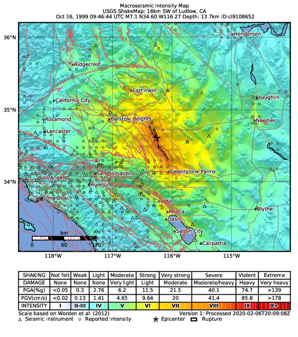
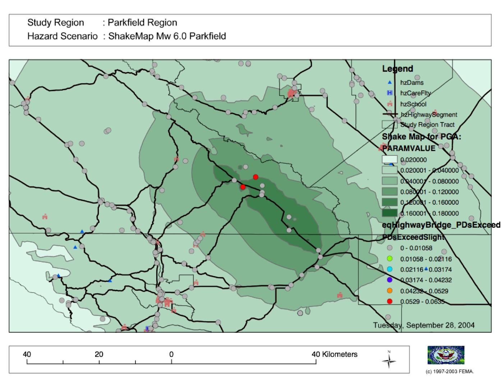
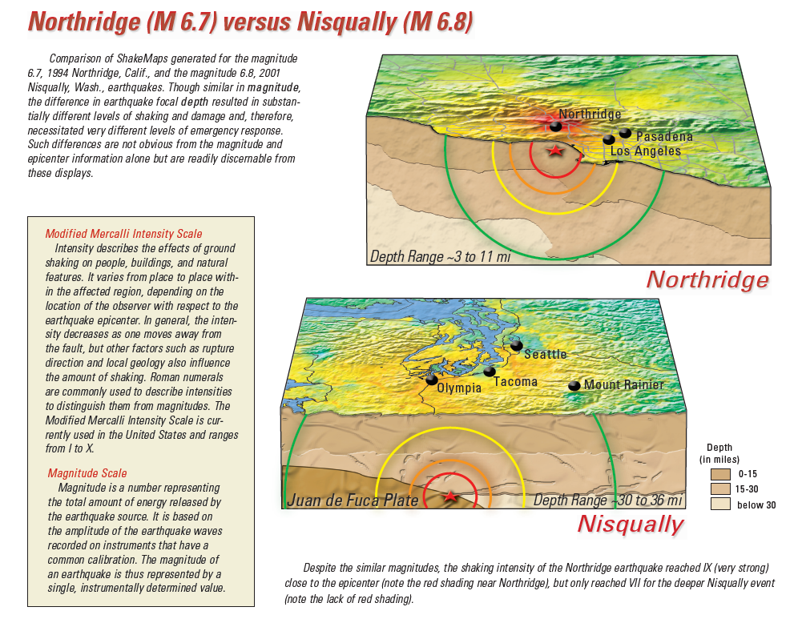
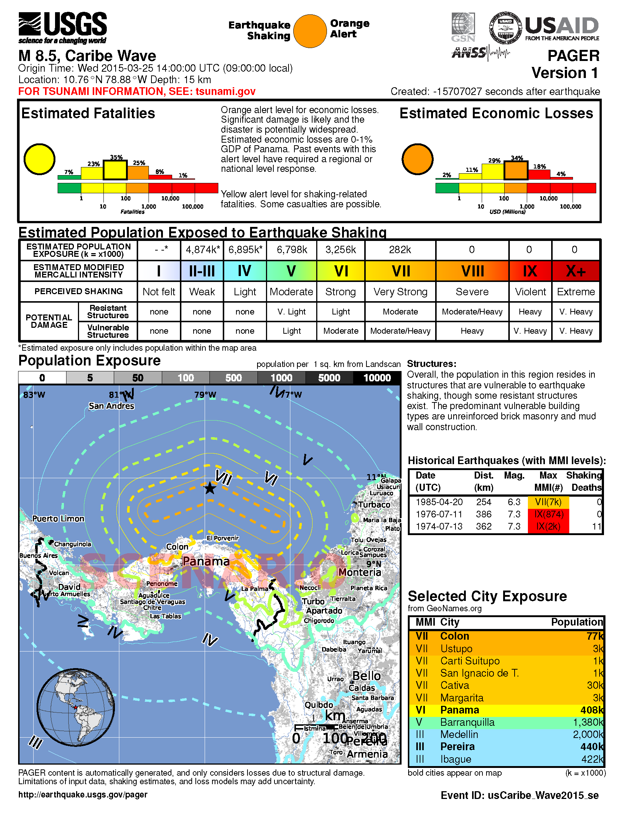

Applications of ShakeMap¶
The distribution of shaking from a significant earthquake, whether expressed as PGA, PGV, or intensity, provides responding organizations a significant increment of information beyond magnitude and epicenter. Real-time ground-shaking maps provide an immediate opportunity to assess the scope and impact of an event. Thus, they can allow emergency managers and responders to determine what areas were likely subjected to the highest intensities and what the probable impacts were in those areas. Importantly, ShakeMap also affords decision-makers a rapid portrayal of those areas that received only weak motions and are likely to be undamaged. The latter areas can potentially be used for mutual aid.
Though initially developed primarily for emergency management, ShakeMaps have been shown to be highly beneficial for other user sectors. These other uses include improved loss estimation, public information and education through the media and webpages, financial decision making, and engineering and seismological research. Some specific examples are provided below for these use cases.
As a side benefit, an intensity-based depiction of shaking hazards through ShakeMap (and DYFI) facilitates the adoption of the intensity scale more generally. Inculcating the populace to earthquake shaking using intensity scales (as opposed to magnitude alone) has become crucial not just for communicating post-earthquake shaking hazards; the color coding and utilization of intensity has more generally helped depict imminent and future shaking hazards. For example, the ShakeMap intensity color palette has been adopted for Earthquake Early Warning (EEW; see for example QuakeAlert) as well as for communicating future hazards through deterministic scenarios and with Probabilistic Seismic Hazard Maps (see ShakeMap Scenarios).
Emergency Management and Response¶
The value of seismic monitoring and ShakeMap was addressed by a report by the National Research Council’s (NRC) ad-hoc Committee on the Economic Benefits of Improved Seismic Monitoring (National Research Council, 20006). In Chapter 7, “Benefits for Emergency Response and Recovery”, the committee refers to the Oct. 16, 1999 M7.1 Hector Mine, California earthquake (ShakeMap shown in Fig. 2.25).
{kind=link}

Fig. 2.24 NRC Seismic Monitoring Report¶
The very rapid availability of earthquake source data—including magnitude, location, depth, and fault geometry—provides basic orienting information for emergency responders, essential information for the news media and the public, and input data for other applications and response-relevant products. Maps of ground shaking intensity (ShakeMap) have many important applications in emergency management. Because ShakeMap is available via the Internet, all emergency responders at all levels of government and the private sector have access to the same rapidly available information. With this information, responders can quickly assess the scope of the emergency and mobilize resources accordingly. Early reconnaissance efforts can target areas known to have been shaken most severely, and key emergency services including search and rescue, emergency medical response, safety assessment of critical facilities, and shelter and mass care can be expedited based on a more rapid identification of incident location. Monitored information is also useful for rapidly assessing situations in which a large, widely felt earthquake occurs but causes little damage (such as the Hector Mine earthquake of October 16, 1999). Clearly, there are significant economic benefits in scaling a response to the consequences of an event, including no response for an earthquake that requires none.
{kind=link}

Fig. 2.25 Instrumental Intensity ShakeMap for the 1999 M7.1 Hector Mine, CA earthquake. (Map regenerated in 2020)¶
Specifically in the context of disaster management and response in the U.S., ShakeMap has been recognized as a top priority:
ShakeMap has become a valuable tool to assist emergency responders in identifying the likely extent of earthquake damage. Strong-motion data (now increasingly available in real-time) can be correlated with documentation and evaluation of the performance of the built environment, leading to understanding the causes of earthquake damage and the occurrence of good structural and non-structural performance” (`Western States Seismic Policy Council Policy Recommendation 14-3 <www.wsspc.org/wp-content/…/PR_14-3_SeismicMonitoring_WebPub.pdf>`_).
Similarly, a report by the National Science and Technology Council Subcommittee on Disaster Reduction* (Grand Challenges for Disaster Reduction: Priority Interagency Earthquake Implementation Actions) describes “Grand Challenge 1”:
Provide hazard and disaster information where and when it is needed. […] Expand the Advanced National Seismic System to improve seismic monitoring and deliver rapid, robust earthquake information products; For all urban areas with moderate to high seismic risk, produce ShakeMaps that show the variation of shaking intensity within minutes after an earthquake based on near real time data transmission from densely spaced seismic networks.
One of the earliest examples of the use of ShakeMap for emergency management and response was the the M7.1 Hector Mine earthquake of October 16, 1999 (see Fig. 2.25). This event provides an important lesson in the use of ShakeMap to assess the scope of an event and to determine the level of mobilization necessary. The Hector Mine earthquake produced ground motion that was widely felt in the Los Angeles basin and, at least in the immediate aftermath, required an assessment of potential impacts. It was rapidly apparent, based on ShakeMap, that the Hector Mine earthquake was not a disaster, and despite an extensive area of strong ground shaking, only a few small desert settlements were affected. Thus, mobilization of a response effort was limited to a small number of companies with infrastructure in the region and brief activations of emergency operations centers in San Bernardino and Riverside Counties and the California Office of Emergency Services (now the California Emergency Management Agency, or CalEMA).
While prioritizing earthquake response and management is considered the primary goal of systems like ShakeMap, unnecessary response to an earthquake—although not as costly as inadequate or misguided response in a real disaster—can be avoided with proper well-constrained shaking information. Had the magnitude-7 earthquake occurred in urban Los Angeles or another urban area in California, ShakeMap could be employed to quickly identify the communities and jurisdictions requiring immediate response. To help facilitate the use of ShakeMap in emergency response, ShakeMap is now provided to organizations with critical emergency response functions automatically through USGS webpages, ShakeCast, and similar tools.
Loss Estimation¶
The Federal Emergency Management Agency (FEMA) employs ShakeMap for post-earthquake damage assessments. USGS generates customized, formatted ESRI shapefiles for direct input into FEMA’s Hazards U.S. (HAZUS-MH ; FEMA (2006) loss estimation software. The customization includes specific contour intervals for all events, geometric-mean ground motions (as opposed to ShakeMap standard maximum component), and peak ground velocity in units of inches/sec rather than cm/s. The HAZUS-formatted ShakeMap shapefiles are made available to FEMA for scenarios and all significant domestic (U.S.) earthquakes via webpages and ArcGIS services (see Web Mapping (GIS) Services).
The use of ShakeMaps as the shaking hazard input into HAZUS is a major improvement in loss-estimation accuracy because actual ground-motion observations are used directly to assess damage, rather than relying on simpler estimates based on epicenter and magnitude alone, or from predefined earthquake scenarios built into the HAZUS software.
FEMA’s HAZUS loss estimates can be important for coordinating state and federal response efforts, including Disaster Declarations. HAZUS’s detailed impact reports can provide focus to the mobilization of resources and expedite the local, state, and federal disaster declaration process, thus initiating the government’s response and recovery machinery. ShakeMap, when overlaid with inventories of critical lifelines and facilities (e.g., hospitals, utilities, and substations), highways and bridges, and vulnerable structures, provides an important means of prioritizing response. Such response activities can include shelter and mass care, mutual aid assignments, emergency management, damage and safety assessment, utility and lifeline restoration, and emergency public information.

Fig. 2.26 2004 M6.0 Parkfield, CA earthquake ShakeMap shapefiles (green polygons) and HAZUS estimated impact to selected infrastructure (circles) examined. Figure courtesy of D. Bausch, FEMA.¶
As of 2015, the HAZUS-MH software is run interactively, not automatically, so qualified FEMA personnel must be on hand to initiate HAZUS calculations and post the results. In addition, for heavily populated areas (such as major cities in California), HAZUS software can take a few hours to compute losses. Thus, initial HAZUS-based losses are well behind initial ShakeMap and PAGER results, and of course they are limited to earthquakes in the U.S. However, the HAZUS results provide much greater detail and information about infrastructure than PAGER-based aggregated losses.
As described in the section on Scenarios (ShakeMap Archives), HAZUS-MH is the standard approach for delivering loss estimates for ShakeMap scenarios domestically. For real events, the ShakeMap-to-HAZUS handoff has been formalized with a liaison agreement (a Memo of Understanding, MOU) involving Doug Bausch, formerly of FEMA Region VIII, and David Wald at the USGS NEIC. Because ShakeMap shaking estimates evolve with time, and HAZUS loss estimates take time to compute, it is essential that direct communications between the two agencies takes place immediately after a serious earthquake to optimize loss estimates.
The USGS-FEMA partnership has been activated for several domestic earthquakes since this system was put into place, including 2004 M6.0 Parkfield, California; 2006 M6.0 Kiholo Bay, Hawaii; 2010 M7.2 Baja California, Mexico; 2011 M5.6 Prague, Oklahoma; 2011 M5.8 Mineral, Virginia; the M6.0 2015 American Canyon, California; and several other events. The same approach has been tested and applied retrospectively against the 1994 M6.7 Northridge, California and 1989 M6.9 Loma Prieta, California earthquakes, among others.
Financial Sector Decision-Making¶
Post-earthquake financial decision making has evolved considerably over the past decade. Insurers and reinsurers, private companies, governments, and aid organizations have shown increasing creativity in the utilization of near–real-time earthquake information for their own loss estimation, financial adjudication, and situational awareness. Such financial analyses can be of significant benefit to stakeholders, facilitating risk-transfer operations, fostering sensible management of risk portfolios, and assisting disaster responders. Ultimately, these improvements translate to benefits for the public and those at risk (Franco, 2015).
In general, there are three categories of post-earthquake financial services and decision making: 1) analysis of expected losses arising from an actual event against a portfolio of exposures; 2) the triggering of payments for parametric insurance products; and 3) the use of quantitative loss estimates to manage disaster response and aid. Business and public-sector portfolio managers can employ tools like ShakeCast or in-house applications to automatically retrieve and compute losses based on pre-assigned fragility curves. Within the (re)insurance sector, catastrophe (CAT) bonds and contingency loans based on earthquake risk models are often triggered via parametric analyses, which are dependent on earthquake parameters or intensity-measure (IM) estimates as well as their uncertainties.
Anticipating potential losses and acting rapidly and accordingly is also of utmost importance to emergency management and disaster aid communities. Estimated losses constitute vital input for rapid situational awareness, facilitating decision-making on whether or not to commit and deploy resources, and to what level.
To a large extent, the advancement of post-earthquake financial instruments has been facilitated by the availability of rapid and accurate earthquake parameters and more quantitative geospatial hazard information. Commensurately, USGS products like ShakeMap and PAGER have evolved to further accommodate specific requirements of the financial sector. For instance, improved approaches for quantifying uncertainty can better inform loss estimates, and historical ShakeMap Atlas data can assist in loss-model calibration. In addition, USGS now provides PAGER loss estimates broken down by country to fulfill the need required in the CAT bond and contingency loan arena, while still remaining within the confines of reasonable spatial accuracy. Similarly, requests have been made by U.S. State governments to further compute losses at the state level, although such resolution is not yet warranted, particularly in areas of sparse real-time strong-motion instrumentation. Lastly, for many uses, the automatic retrieval and processing of ShakeMaps has been facilitated via GeoJSON feeds, webmapping servers, and the ShakeCast systems.
Several types of data and information products available or under development that may be of benefit to the financial sector. The generation of suites of standardized earthquake scenarios—both domestic and internationally—is underway, and an update of the global Atlas of ShakeMaps has been completed (see ShakeMap Archives).
There are several continuing challenges under consideration and scrutiny: implementing directivity; computing and depicting spatial ground motion correlations; improving approaches for quantifying and conveying uncertainties; and creating more explicit ShakeMap policy and version-control documentation. Wald and Franco (2016) describe how these advances may in turn facilitate the appearance of new and more refined financial instruments and insurance products.
Public Information and Education¶
The rapid availability of ShakeMap on the Internet, combined with the urgent desire for information following a significant earthquake, makes this mapping tool a huge potential source of public information and education. In instances in which an earthquake receives significant news coverage, the ShakeMap site and “Did You Feel It?” (DYFI) receive an enormous influx of visitors (Wald et al., 2011). Such opportunities are amplified by widespread adoption of ShakeMap into media and educational materials by other institutions.
ShakeMap’s intensity scale is key for introducing and impressing upon the public and the media the importance of macroseismic intensity, rather than the continuing sole dependence on magnitude as the scale of reference for earthquakes. Although Japanese Meterological Agency (JMA) Intensity (.e.g., JMA, 1996) differs slightly from its U.S. counterpart, Modified Mercalli Intensity (MMI)—JMA’s is strictly instrumentally-derived—it is widely used and understood in Japan (e.g., Celsi et al., 2005). JMA has successfully made intensity the norm for communicating to the Japanese population about real-time and future earthquake hazards via television, smartphone, web content, annual earthquake drills, and the educational system. Because JMA intensity is widely understood, the public is be more attuned to earthquake risks than populations familiar only with magnitude descriptions of earthquakes (e.g., Celsi et al., 2005).
Earthquake education also occurs through the media. The anchoring effect we report may be lessened significantly if the press consistently used the Mercalli scale and helped to educate the public about the scale. Research should be conducted to better understand if and how news organizations can successfully utilize the Mercalli scale in communicating earthquake information. Alternative formats, for example, using letters rather than Roman numerals for the categories, may ameliorate the confusion between magnitude and Mercalli scales. The experience in Japan provides support for the idea that laypeople can learn to use the two scales side by side. The Japanese media report both intensities and magnitude, with viewers maintaining a clearer understanding of the relationship between magnitude and intensity. In Japan, the overall magnitude and the intensity are both instrument numbers, with the latter being location-specific.
The acclimatization of the public to intensity is inline with the findings of Gomberg and Jokobitz (2013):
Simpler messaging and explanations are needed by some users, and this may be achieved by developing two styles of some products, one designed for nontechnical users and the other tailored for engineers and scientists. The tangible impacts of an earthquake must be conveyed more simply and succinctly, employing a scale useful for decision-making at the regional and local levels.
Acknowledging the importance of ShakeMap as a tool for public information and education, considerable effort was taken to provide a range of formats suitable for broadcast and webpages. Initially “Media Maps”, simplified versions of the Instrumental Intensity maps, were packaged in a way that makes them more suitable for broadcast to low-resolution devices, such as TV monitors—roads and borders are thicker, fonts are larger, and the title and intensity scale are simplified—and a “TV guide” information sheet was provided to supplement the Media Maps, to allow easier delivery of basic earthquake information. These formats have naturally evolved to GIS, KML, and now interactive (zoomable) maps that allow customization of the basemap layers and other content. Such interactive maps are in favor in newsrooms and educational contexts.
However, some of the static maps have made for the most widespread distribution. A widely used graphic (Fig. 2.27), for example, compares ShakeMap-generated intensities for the 1994 Northridge earthquake, a shallow crustal earthquake near Los Angeles, with the 2001 deep, intraslab Nisqually, WA earthquake. This figure was reprinted in numerous reports, textbooks, classes, reports, and briefings, including Putting Down Roots and the National Research Council.
{kind=link}

Fig. 2.27 Widely adopted graphic of comparing ShakeMaps for the 2001 M6.8 Nisqually, WA and 1994 M6.7 Northridge, CA earthquakes, showing how distance from an earthquake affects the level of shaking experienced. Even though the magnitude of the Nisqually earthquake was slightly greater than that of the Northridge earthquake, the shaking was lower on average, primarily because the fault that ruptured during the Northridge earthquake was shallower (5-20km deep) than that of the Nisqually earthquake (about 45-50km deep).¶
The continued longterm education of the public to intensity continues through many TV channels and other means, for instance, in academic courses (e.g., Larry Braile’s undergraduate courses), textbooks (e.g., Yeats, 2004 “Living with Earthquakes in the Pacific Northwest”), and even Wikipedia.
Emergency Preparedness¶
One of the leading tools for earthquake emergency preparedness has been the widespread adoption of “ShakeOut” and other earthquake drills and planning scenarios. In many of these cases, ShakeMap is employed both for developing the framework for portraying each earthquake in its hazard context and for computing loss estimates to examine and communicate its potential societal impact. The initial success of the Great Southern California ShakeOut (Jones et al. (2011) has been built by SCEC, USGS, and others into a worldwide annual exercise (on Oct 15th of each year) involving millions of participants.
On a statewide basis, exercises take place in several of the more tectonically active areas of the country, such as ShakeOuts in Utah and the 2012 Evergreen Earthquake Exercise ShakeMaps in Washington State.
Nationwide, FEMA’s National Level Exercises (NLEs) program is another source for planning for complex, whole-community, large-scale disasters and emergencies. Here, too, NLEs often employ ShakeMap as the basis for their exercises. The ShakeMap-HAZUS combination was to support the New Madrid 2011 NLE, involving an M7.7 New Madrid region mainshock and several significant aftershocks. In 2014, the “Capstone Exercise” NLE was a complex emergency preparedness exercise including the Alaska Shield 2014 exercise, sponsored by the State of Alaska to commemorate the 50th anniversary of the 1964 Great Alaskan Earthquake. The exercise also involved significant damage from earthquake shaking as well as tsunami, triggering impacts in the Pacific Northwest. The Department of Defense (DOD) aligned key components of the Capstone exercise with a connected “Ardent Sentry” table-top exercise with the same ShakeMap input in order for DOD to focus on defense support to civilian authorities.
{kind=link}

Fig. 2.28 Annual “Caribe Wave” earthquake and tsunami exercise for the Caribbean region.¶
Internationally, USGS participates (through the National Oceanic and Atmospheric Association, NOAA) in an annual “Caribe Wave” earthquake and tsunami exercise for the Caribbean region (IOC, 2012; see Fig. 2.28). The USGS ShakeMap and PAGER group also work directly with the U.S. Agency for International Development (USAID) Office of Foreign Disaster Assistance (OFDA), the World Bank, and Geohazards International (GHI) (among many other agencies, countries, and NGOs) to develop global planning exercises and scenarios.
Earthquake Engineering and Seismological Research¶
For potentially damaging earthquakes, ShakeMap produces response spectral acceleration grid values for three periods (0.3, 1.0, and 3.0 sec). The spectral acceleration values are used for loss estimation, as mentioned above, yet these measures also serve many earthquake engineering analysis purposes. In a post-earthquake environment, information from engineering analyses of structures (including via ShakeCast, see below) provides a framework for post-earthquake occupancy, tagging, and damage inspection by civil engineers.
ShakeMap products and metadata aggregate earthquake source information, shaking intensity measures (IMs) including both seismic and macroseismic observations, and fault geometries and station-sources distances. In addition to providing these data systematically for recent events, the same constraints are made available for numerous earthquakes, for recent events as well as historical events (ShakeMap Archives).
The aggregation of earthquake information and fault geometries—in conjunction with reported shaking and macroseismic data—provide the basis for analyses of best-estimate ground motion IMs at specific sites for comparison with human behavior and response by the natural and built environments. Here is a sampling of the range of studies these products motivate and facilitate:
Example Engineering Research and Analyses:
Analyses of potential damage to column/beam welds in steel buildings following the 1994 Northridge earthquake. ATC 2002.
ATC-54: Guidelines for using strong-motion data and ShakeMaps in Post-Earthquake Response. ATC 2002.
An Empirical Model for Global Earthquake Fatality Estimation. Jaiswal and Wald (2010).
Guidelines for the Collection of Consequence Data, Global Earthquake Consequences Database Global Component Project. Pomonis and So (2011).
ShakeCast Case Study on Nevada Bridges. Biasi et al (2016).
Example Seismological Research and Analyses:
Intensity attenuation for active crustal regions. Allen et al, 2012.
Ground Motion to Intensity Conversion Equations (GMICEs): A Global Relationship and Evaluation of Regional Dependency. Caprio et al. (2015).
Fault extent estimation for near-real time ground shaking map computation purposes. Convertito et al. (2011).
Bayesian Estimations of Peak Ground Acceleration and 5% Damped Spectral Acceleration from Modified Mercalli Intensity Data*. Ebel and Wald (2003).
Regression analysis of MCS intensity and ground motion parameters in Italy and its application in ShakeMap. Faenza and Michilini (2010)
A Global Earthquake Discrimination Scheme to Optimize Ground-Motion Prediction Equation Selection. Garcia et al. (2012b).